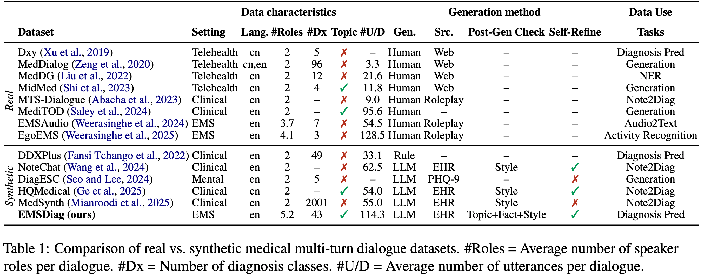

EMSDialog: Synthetic Multi-person Emergency Medical Service Dialogue Generation from Electronic Patient Care Reports via Multi-LLM Agents
Related Work
Training and evaluating models for conversational diagnosis prediction requires realistic medical conversation data paired with diagnosis annotations. In real clinical practice, however, medical conversations are often inherently multi-party: information is elicited, relayed, and verified across speakers with different roles, responsibilities, and access to context. Emergency Medical Services (EMS) is a representative example of this setting, where medics coordinate with partners and dispatch while interacting with patients and bystanders, each contributing distinct evidence throughout the encounter.
Existing medical dialogue resources remain limited for this setting. First, many online doctor–patient dialogue datasets are asynchronous and dyadic, making them less suitable for modeling real-time operational medical workflows. Second, EHR-grounded human role-play datasets improve case realism, but they still typically assume only two speakers and often do not provide task-aligned diagnosis annotations. Third, synthetic medical dialogue datasets generated by rules or large language models are scalable, but they often overlook realistic topic flow, multi-party coordination, and the rich structured annotations needed for downstream tasks such as conversational diagnosis prediction.
These limitations motivate EMSDialog. Our dataset is designed to support conversational diagnosis prediction in realistic EMS settings by emphasizing multi-speaker interactions, operational realism, and diagnosis annotations aligned with downstream decision-making. This makes it suitable not only for studying what to predict, but also when to make or defer a diagnosis as a conversation unfolds.
Dataset Comparison
Existing medical dialogue datasets only partially capture the requirements of conversational diagnosis prediction in realistic EMS settings. We compare EMSDialog with prior resources in terms of speaker structure, operational realism, and annotation support.

Abstract
Conversational diagnosis prediction requires models to track evolving evidence in streaming clinical conversations and decide when to commit to a diagnosis. Existing medical dialogue corpora are largely dyadic or lack the multi-party workflow and annotations needed for this setting. We introduce an ePCR-grounded, topic-flow-based multi-agent generation pipeline that iteratively plans, generates, and self-refines dialogues with rule-based factual and topic flow checks. The pipeline yields EMSDialog, a dataset of 4,414 synthetic multi-speaker EMS conversations based on a real-world ePCR dataset, annotated with 43 diagnoses, speaker roles, and turn-level topics. Human and LLM evaluations confirm high quality and realism of EMSDialog using both utterance- and conversation-level metrics. Results show that \emph{EMSDialog}-augmented training improves accuracy, timeliness, and stability of EMS conversational diagnosis prediction.
EMS-MCQA Dataset Statistics
A high-level snapshot of EMS-MCQA by subject area, certification level, and question attributes.


Results

Where do SOTA LLMs shine or stumble on EMSQA across subject areas and certification levels?

How much does explicit expertise injected by Expert-CoT lift baseline accuracy?

How much does explicit expertise injected by Expert-CoT and ExpertRAG lift baseline accuracy?

Can expertise-aware LLMs meet the NREMT passing score at different certification levels??
Video Presentation
Poster
BibTeX